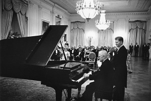
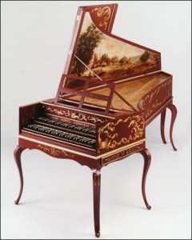
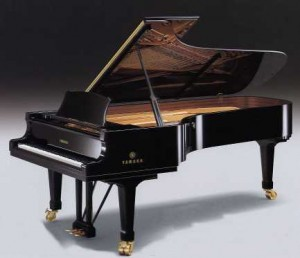
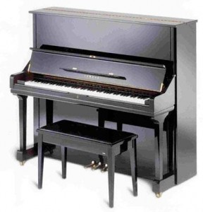
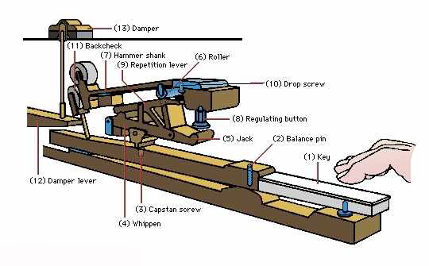
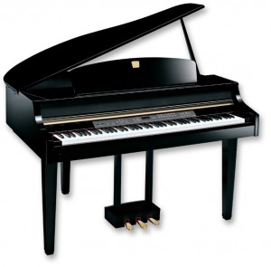

Lịch sử cây đàn Piano
I. Sơ lược về đàn piano
Piano là tên một nhạc cụ thuộc loại có bàn phím (keyboard), nhạc cụ gõ (percussion) hay nhạc cụ dây (string), tùy thuộc vào cách thức phân loại. Đàn piano tạo ra âm thanh bằng cách gõ vào các sợi dây thép bằng những chiếc búa bọc nỉ bật lên ngay tức thì để cho dây đàn tiếp tục ngân vang ở tần số cộng hưởng của nó. Những rung động này được truyền qua các cầu đến bảng cộng hưởng (soundboard), bộ phận khuếch đại chúng. Âm vực của cây đàn piano ban đầu cũng chỉ có bốn, hay nhiều nhất là năm quãng tám giống như ở đàn harpsichord. Nhưng dần dần nó đã mở rộng tới trên bảy quãng tám vì những thay đổi cấu trúc đàn đã cho phép lực căng tăng lên tới vài tấn. Đàn piano được sử dụng rộng rãi trong âm nhạc phương Tây cho biểu diễn độc tấu, âm nhạc thính phòng và nhạc đệm. Nó cũng rất phổ biến với vai trò một phương tiện trợ giúp cho sáng tác và diễn tập. Mặc dù không thể mang vác và giá thành đắt đỏ, sự đa dụng và hiện diện khắp nơi của nó đã khiến nó nằm trong số những nhạc cụ quen thuộc nhất.
Từ piano là dạng rút gọn của từ pianoforte, hiếm khi được dùng ngoại trừ trong ngôn ngữ trang trọng và có nguồn gốc từ cái tên gốc tiếng Ý của nhạc cụ là gravicèmbalo col piano e forte, (có nghĩa harpchichord với âm nhẹ và mạnh). Điều này có liên quan đến khả năng của đàn piano trong viêc tạo ra các nốt ở các mức độ sắc thái khác nhau phụ thuộc vào tốc độ và lực nhấn phím.
Các đàn piano ngày nay có hai hình dạng cơ bản (với các phân loại nhỏ hơn của chúng) là piano cánh (grand piano) và piano đứng (upright piano hay vertical piano). Ngoài ra theo sự phát triển của kĩ thuật hiện đại, một số dạng piano khác cũng đã xuất hiện như piano tự động (player piano), piano đồ chơi (toy piano), piano đặt sẵn chương trình (prepared piano), piano kỹ thuật số (digital piano)…
II. Lịch sử phát triển đàn piano
1. Grand piano
Những chiếc grand piano ngày nay được xây dựng trực tiếp từ những chiếc đàn clavecin (harpsichord) từ khoảng thế kỷ 16 và 17. Khoảng năm 1700, Bartolomeo Cristofori đã thử tạo ra một chiếc đàn harpsichord mà có thể biểu hiện âm nhạc một cách truyền cảm hơn, và đã tạo ra một bộ máy mà các búa gõ vào các dây, khác với đàn harpsichord là dùng quill (dụng cụ gảy đàn bằng ống lông) để gảy. Một đặc trưng lớn khác ở đàn piano thời đầu của ông là cơ cấu búa thoát, nó khiến cho búa tách rời khỏi phím một khi các nốt được đánh lên, và rồi chơi lại ở một vận tốc khác hẳn, làm thay đổi hẳn sự biểu cảm của chính các note đó. Những chiếc piano đầu tiên của Critofori vẫn còn chứa đựng rất nhiều nét giống với thiết kế của một cây đàn clavecin, còn âm thanh thì phần nhiều vẫn như thế, ngoại trừ việc là người chơi bấy giờ có thể chơi nhạc bằng việc nhấn vào bàn phím.
Các thiết kế của Critofori không được biết đến mãi cho đến những năm cuối của 1700, khi các bản thiết kế piano của ông được xuất bản. Các nhà sản xuất như Gottfried Silbermann người Đức và học trò của ông là Christian Friederici và Johannes Zumpe bắt đầu phát triển piano với vai trò là một nhạc cụ độc lập với clavecin. Mặc dù lúc đầu ko được ấn tượng cho lắm nhưng được J.S.Bach ủng hộ năm 1747. Âm nhạc bắt đầu được viết riêng cho piano từ năm 1732 và kỷ nguyên của nó với vai trò một nhạc cụ dành cho biểu diễn bắt đầu.
Sự phát triển của grand piano sau năm 1750 diễn ra theo hai hướng cơ bản. Ở Anh, đàn piano được thiết kế nặng hơn và phức tạp hơn, giống với những cây đàn ngày nay hơn. Ở Đức, một loại khác nhẹ hơn và cấu trúc đơn giản hơn được biết đến như một cây đàn xứ Vienna, được nhà sản xuất Johann Andreas Stein xây dựng, đó chính là những cây đàn mà Haydn, Mozartvà Beethoven đã chơi và soạn nhạc trên đó.
Khi grand piano ngày càng phát triển, nó dần trở thành một nhạc cụ độc lập và cần làm cho âm thanh to hơn. Để tăng âm, các dây phải dầy hơn và bộ khung phải khoẻ hơn nữa, như thế có thể đạt được một áp lực lớn hơn. Bộ khung của đàn piano thông thường được làm bằng gỗ, trở nên dày hơn và nặng hơn và thanh chằng chéo giúp nó kiên cố hơn. Đến năm 1820, Thomas Allen thậm chí vẫn còn dùng các ống kim loại để giữ căng các dây, và một nhà sản xuất thành công người Anh là John Broadwood bắt đầu dùng các tấm bằng sắt để giữ cho chúng được căng lên, mà giờ đây các đĩa đó phần lớn được làm bằng kim loại hơn là bằng gỗ. Năm 1825 Alpheus Babcock sáng chế ra khung bằng gang và sau đó năm 1843, một người Mỹ là Jonas Chickering bắt đầu làm piano với một đĩa tròn vành, một nét đặc trưng của các piano cánh ngày nay. Một sự phát triển đáng chú ý khác là việc chằng các dây, được phát triển bởi Henri Pape năm 1828 và Steinway cấp bằng sáng chế năm 1859, ông đã đặt các dây bass dài hơn lên cao hơn các dây kim, giúp cho các dây dài hơn ở trong hộp ngắn hơn và đặt các dây bass ở giữa qua một bảng cộng hưởng (soundboard) để có một sự hồi âm tốt hơn.
Grand piano được bắt đầu sản xuất hàng loạt vào những năm 1800, cùng với sự thành lập của các công ty như: John Broadwood & Sons, Jonas Chickering, Julius Blũthner, Ignaz Bosendorfer, Friedrich Bechstein, Henry Steinway và Sebastien Erard, những công ty này hoàn toàn phát triển từ nền tảng của mẫu đàn cánh đó tới năm 1821.
2. Vertical piano
Sự thử nghiệm đầu tiên để tạo ra một vertical piano đứng xảy ra khoảng vào giữa năm 1735 và 1745. Một người Italia là Domenico Del Mela đã thiết kế một chiếc vertical piano năm 1739 sử dụng một cấu trúc đơn giản. Năm 1745 một người Đức là Christian Ernst Friederici lại tạo ra một loại nhạc cụ được biết đến là “Pyramid piano” (piano kim tự tháp), sở dĩ có tên như vậy là vì hình dáng đặc biệt của chúng. Friederici xuất phát từ cây đàn grand piano vốn có và kết hợp thiết kế hình dáng của vertical piano, nâng các dây và soundboard lên vuông góc với bàn phím và vì thế khiến chúng đứng thẳng, còn các trục lên dây ở dưới đáy của bộ dây, ngay trên các phím. Các cấu trúc piano mà Friederici sử dụng là một phiên bản giản đơn hoá từ một thiết kế của Bartolomeo Christofori năm 1720, tuy nhiên bộ cơ của Friederici thiếu mất các đặc trưng mô phỏng trong nguyên bản của Christofori. Toàn khối nhạc cụ đó được đặt đứng trên một cái bệ hoặc bàn và đằng trước có các cánh cửa có thể đóng mở tự động, để lộ ra bộ dây và soundboard. Các thiết kế này mới chỉ kết hợp giữa grand và vertical piano, sử dụng các dây và soundboard của vertical piano và bộ cơ của grand piano. Các mẫu này được đưa ra vào những năm 1800 nhưng rất mờ nhạt và thua kém so với những mẫu sau này, và đến năm 1840, pyramid piano và vertical piano đã cùng đồng thời bị ngừng sản xuất.
Vertical piano còn tiến hoá đến tận cuối những năm 1780 với sự phát triển của một cấu trúc được thiết kế hoàn toàn thẳng đứng, theo sự thẳng hàng của bộ dây và soundboard. Những chiếc đàn đầu tiên được gọi là một “sticker” (gai), vì có những cái sticker dài làm bằng gỗ nối mặt sau của phím tới đầu cần. Đầu cần được dựng vuông góc với bộ dây và bắt đầu một quá trình bằng việc đầu cần đập trở lại các dây và cứ thế tiếp tục quay lại. Nó được John Landreth thiết kế vào năm 1787 và được William Southwell người Anh xây dựng và bổ sung năm 1798. Một sự phát triển quan trọng khác nữa là dây chằng chéo, giúp cho các dây ở đàn vertical piano dài hơn và cải thiện âm thanh. Năm 1831 Hermann Lichtenthal đã thiết kế ra một hệ thống mà ở đó búa được kiểm soát bằng độ dài của dải băng, như vậy sẽ không cần phải dồn các dây lên một cú đánh đơn lẻ nữa. Robert Wornum – người Anh đã tinh lọc cơ cấu tape-check, đó là cơ sở cho các bộ cơ của vertical piano ngày nay. Có 2 phương thức chống rung bộ dây khác nhau đã được cải tiến. Một cách là sử dụng hệ thống overdamper (giảm âm quá mức), ở đó một dây kim loại dài được gắn với đằng trước của mỗi đòn bẩy trung gian để đi lên và vượt qua đỉnh của các búa. Khi nhấn các phím, sợi dây sẽ chuyển động theo một liên kết để đặt một miếng nỉ hình vuông xuống các dây trước khi búa đập xuống và bật miếng nỉ trở lại khi không nhấn các phím nữa. Hệ thống này tiếp tục được sử dụng cho đến những năm cuối 1800 và rất phổ biến ở Anh và Đức. Hệ thống chống rung thứ hai là một đòn bẩy có bản lề, được nối tới đằng sau của mỗi máy búa gần bộ dây, nó xoay miếng nỉ vuông rời khỏi dây bằng một vòng xích tới đòn bẩy trung gian. Thiết kế này có hiệu quả hơn trong việc chống rung và được sử dụng ở các vertical piano ngày nay. Mẫu vertical piano đã tương đối hoàn chỉnh và các cây đàn ngày nay cơ bản là không thay đổi gì so với những thiết kế từ những năm đầu 1800 đó.
Đến năm 1840, vertical piano tương tự như những gì chúng ta thấy ngày nay, mặc dù có nhỏ hơn và với cấu trúc tinh vi hơn. Các dây giờ đây chạy thẳng từ đỉnh xuống đáy thùng (mà giờ đây được đặt dưới đất chứ ko phải trên một cái bàn như ở pyramid piano). Hệ thống lên dây giờ đây được đặt ở đỉnh của hộp đàn, với các dây chạy chéo xuống hộp đàn và được gắn chặt ở đáy. Bộ cơ và bàn phím nằm ở trung tâm của bộ dây với một phím đẩy sticker lên cao và làm các búa chuyển động lại về hướng các dây.
Những năm sau này, các nhà sản xuất đua nhau làm ra những chiếc đàn piano với những cải tiến hoặc biến đổi khác nhau. Có rất nhiều tên tuổi lớn trong làng sản xuất piano với những nhãn hiệu nổi tiếng và được tín nhiệm như : Broadwood, Baldwin, Marshall& Rose, Kemble,Yamaha, Kawai, Whelpdale & Maxwell, Steinway, Wendl & Lung…. mà ở mỗi hãng, cây đàn lại có một phong cách hay đặc trưng riêng biệt. Thế kỷ 20 đựơc nhìn nhận là có nhiều cuộc chạy đua về kỹ thuật và mẫu mã của cây đàn, hết phóng to lại thu nhỏ, thêm một bộ phận này, bớt một bộ phận khác, tuy vậy, về tổng thể, những thay đổi đó vẫn dựa trên những nguyên mẫu từ thế kỉ 19.
III. Cấu trúc đàn piano ngày nay
Cây piano hiện đại có 6 bộ phận chính (những bộ phận của piano được đánh số trong biểu đồ sau đây.
{kind=link}
1. Khung đàn (Frame): thường được làm bằng sắt, ở rìa sau gắn thanh chốt dây để cài chặt một đầu dây đàn. Ở rìa trước là tấm khóa lên dây, gồm nhiều chốt lên dây. Đầu dây đàn còn lại được quấn quanh chốt lên dây. Độ căng của dây (cao độ của nốt) được cân chỉnh bằng cách vặn các chốt lên dây này.
2. Bảng cộng hưởng (Soundboard): làm bằng gỗ vân sam mỏng và cứng, đặt ở dưới lớp dây đàn, có tác dụng tăng âm bằng rung động cộng hưởng.
3. Dây đàn (String): được làm từ dây thép, có độ dài và độ dày tăng dần lên theo cao độ giảm dần. 2 hoặc 3 dây đàn có độ cao như nhau được sử dụng cho mỗi nốt âm cao. Những nốt có âm thấp hơn chỉ dùng một dây độc lập, có kích thước lớn và được làm nặng hơn bằng cách cuộn những sợi dây đồng mỏng xung quanh dây.
4. Bộ cơ (Action): bao gồm tất cả các bộ phận khiến đầu búa chuyển động, chạm tới dây đàn. Bộ phận có thể nhìn thấy rõ nhất chính là bàn phím, được điều khiển trực tiếp bằng ngón tay người chơi. Các phím đàn trắng được làm bằng nhựa hoặc ngà voi, các phím đen được làm bằng nhựa hoặc gỗ mun.
5. Bộ pedals (bàn đạp): là các cần điều khiển bằng chân. Pedal vang âm (phía bên phải – damper pedal) giữ “bàn phím chặn âm” tách khỏi dây đàn, cho phép dây đàn rung một thời gian dài – tạo ra âm thanh ngân vang ngay cả khi tay đã buông khỏi phím đàn. Pedal giảm âm (phía bên trái – còn gọi là una corda) làm giảm một nửa khoảng cách giữa đầu búa và dây đàn, hoặc là chuyển vị trí của đầu búa một chút sang bên cạnh, khiến đầu búa chỉ chạm vào một dây đàn thay vì 2 hay 3 dây như bình thường, làm giảm cường độ âm thanh. Có những cây đàn piano có thêm pedal thứ 3, pedal duy trì (sustaining pedal). Pedal này không giữ toàn bộ bàn phím chặn âm. Khi phím đàn được nhấn xuống, phím chặn âm tương ứng của nốt đó sẽ được nâng lên, pedal duy trì sẽ chỉ giữ riêng biệt phím chặn âm này và không ảnh hưởng tới các phím chặn âm khác. Việc sử dụng những chiếc pedal này có khả năng tạo ra những thay đổi âm thanh tinh tế. Phần lớn những cây vertical piano thay Pedal duy trì bằng pedal tập luyện (pratise pedal) có tác dụng đặt tấm nỉ vào giữa đầu búa và dây, tạo ra âm thanh rất nhỏ.
6. Hộp đàn (Case) tạo nên hình dáng đàn và là cơ sở để người ta phân loại đàn piano thành grand piano (piano cánh), square piano (piano vuông) và vertical piano (piano đứng). Loại piano vuông (chính xác là hình chữ nhật) không còn được sản xuất nữa, nó được thay thế hoàn toàn bằng những chiếc vertical piano chiếm ít diện tích hơn. Loại grand piano được chế tạo với nhiều kích cỡ khác nhau, từ kiểu đàn concert dùng trong các buổi hòa nhạc dài 2,69m (tương đương 8 ft 10 inch) cho tới còn những chiếc baby grand chỉ dài 1,8m.
Kiểu đàn vertical piano cũng bao gồm cả loại đàn vertical piano kích thước nhỏ của những năm cuối thế kỉ thứ 19 giống như đàn spinet ngày nay (đàn harpsichord loại nhỏ) và đàn piano hộp. Ở đàn piano đứng dây đàn chạy dọc hoặc chéo từ trên xuống dưới. Ở đàn piano đứng và những đàn cơ nhỏ đôi khi người ta xếp chồng dây đàn: dây đàn những nốt trầm được căng chéo phía trên các dây ngắn của âm khu cao. Bằng cách này chúng có thể tăng thêm độ dài và cải thiện chất lượng âm thanh. Tổng lực căng dây trên một cây đàn cơ vào khoảng 30 tấn, còn của một cây đàn đứng khoảng 14 tấn.
IV. Cơ chế hoạt động của đàn piano
Về cơ bản, khi phím đàn được nhấn xuống phần cuối của đòn bẩy sẽ đẩy trục đứng lên trên khiến đầu búa gõ vào dây đàn. Cùng lúc đó phím chặn âm được nâng lên khỏi dây đàn để chúng rung tự do tạo ra âm thanh.
Sau đây là miêu tả chi tiết với các số thứ tự được đánh như trong biểu đồ sau đây:

-
Mỗi phím đàn (1) là một đòn bẩy, có điểm tựa ở một trục thăng bằng (2). Khi người chơi nhấn một phím đàn xuống, phần đuôi đòn bẩy được nâng lên khiến trục đứng (3) đẩy khớp nối (4) một đầu được giữ chặt lên. Đầu tự do của khớp nối kéo theo chi tiết hình chữ L được gọi là đòn bẩy thoát (5) (escapement lever) và đòn bẩy lặp (9) (repetition lever).
-
Đòn bẩy thoát đẩy con lăn (6), một cuộn nỉ được gắn chặn vào cán búa (7), đẩy đầu búa lên cao. Đòn bẩy thoát dừng lại khi mà phần đuôi nhô ra của nó chạm vào nút chỉnh (8). Đầu búa rời khỏi đòn bẩy thoát và gõ vào dây đàn. Đòn bẩy lặp cũng được nâng lên, nhưng chỉ tới khi khi đòn bẩy thoát vượt qua nó và chạm vào chiếc ốc rơi (10). Đòn bẩy lặp giữ nguyên vị trí này cho đến lúc phím đàn được thả ra.
-
Sau đó búa rơi một nửa đường về vị trí cũ. Nó bị chặn lại bởi con lăn và chạm vào đòn bẩy lặp đang ở vị trí được nâng lên cao. Đòn bẩy thoát vì vậy có thể trượt phía dưới cán búa vẫn đang được nâng lên một nửa để trở về vị trí ban đầu của nó. Trong lúc đó, búa kiểm tra (11) ngăn đầu búa gõ lại vào dây đàn.
-
Nếu phím đàn được thả ra một phần, búa gõ thoát khỏi búa kiểm tra trong khi đòn bẩy vẫn giữ nguyên ở trạng thái nâng lên. Nếu người chơi lại ấn phím đàn này xuống, đòn bẩy thoát có thể một lần nữa đẩy con lăn và làm cho đầu búa nâng lên, gõ vào dây đàn. (Hệ thống này cho phép sự lặp lại liên tục của một nốt trước khi phím đàn và chiếc búa kịp quay trở về vị trí ban đầu của chúng. Đây là một cải tiến quan trọng so với cơ cấu đơn giản của thời kỳ đầu.)
-
Trong lúc này, phần đuôi của phím đàn đẩy phím chặn tiếng (12) lên phía trên, nâng nó lên khỏi dây đàn. Khi mà phím đàn đã được thả lỏng một phần nào, phím chặn tiếng rơi ngược lại lên dây đàn làm tắt tiếng đàn.
-
Khi phím đàn được thả ra hoàn toàn, toàn bộ cơ cấu lại trở về vị trí đầu tiên nhờ trọng lực. Không giống với những chiếc grand piano, vertical piano không thể dựa vào trọng lực để buộc mọi thứ trở về vị trí ban đầu. Ở grand piano, các bộ phận đặt nằm ngang trên phím đàn, còn với vertical piano thì bộ cơ lại được xếp gần vuông góc. Vì không thể chỉ dựa vào trọng lực nên nó dùng thêm các loại dây và những băng vải nhỏ để kéo các phần của bộ cơ trở về vị trí cũ.
IV.Một số nghệ sĩ độc tấu nổi tiếng
- 
- Yamaha Clavinova
Piano vẫn luôn là nhạc cụ dành cho những nghệ sĩ bậc thầy. Vào thế kỷ XVIII và XIX các nhà soạn nhạc vẫn thường chơi các tác phẩm của chính mình, trong số đó có Wolfgang Amadeus Mozart, Ludwig van Beethoven, Frédéric Chopin và cả nhà soạn nhạc người Hungary Franz Liszt… Nữ nghệ sĩ piano nổi tiếng người Đức Clara Schumann thì chơi những tác phẩm của chồng bà, nhạc sĩ Robert Schumann. Cuối thế kỉ XIX là thời kì độc tôn của nghệ sĩ người Nga Anton Rubinstein, và đến đầu thế kỷ XX rất nhiều các nghệ sĩ biểu diễn khác đã đi lưu diễn khắp Tây Âu và Mỹ. Trong số đó có thể kể đến nghệ sĩ người Ba Lan Ignace Paderewski, nghệ sĩ người Mỹ gốc Ba Lan Josef Hofmann và Arthur Rubinstein. Trong thời kì giữa Chiến tranh Thế giới I và II (1918 – 1939), nhà soạn nhạc và nghệ sĩ biểu diễn người Mĩ gốc Nga Sergei Rachmaninov, nghệ sĩ người Mỹ gốc Áo Artur Schnabel, nghệ sĩ người Anh Dame Myra Hess, nghệ sĩ người Đức Walter Gieseking và nghệ sĩ người Brasil Guiomar Novaes là những nghệ sĩ độc tấu piano được biết đến nhiều nhất. Sau khi thế chiến thứ II kết thúc vào năm 1945, các nghệ sĩ piano người Nga đã xuất hiện trở lại ở Mỹ, hai trong số họ là Emil Gilels và Sviatoslav Richter. Trong số những nghệ sĩ độc tấu piano nổi tiếng còn có nghệ sĩ người Chile Claudio Arrau, một bậc thầy với mảng tác phẩm biểu diễn đặc biệt rộng; Rudolf Serkin, một giáo viên – nghệ sĩ piano người Mỹ sinh ở Séc; nghệ sĩ thiên tài người Mỹ gốc Nga Vladimir Horowitz và nghệ sĩ người Tây Ban Nha Alicia de Larrocha. Một số nghệ sĩ được đánh giá cao khác xuất hiện sau Chiến tranh thế giới thứ II là nghệ sĩ người Anh gốc Áo Alfred Brendel, người bằng những hiểu biết và tài năng của mình đã khơi dậy những cuộc tranh luận về nghệ thuật vốn đã chìm lặng từ lâu; nghệ sĩ người Canada Glenn Gould, người rất được tán thưởng bởi những thu âm các tác phẩm của Bach, hay các nghệ sĩ người Mỹ Van Cliburn, André Watts, Murray Perahia và nghệ sĩ người Iceland gốc Nga Vladimir Ashkenazy. Ngày nay, với khả năng kỹ thuật của các nghệ sĩ piano ngày càng tăng, con số về các cuộc thi piano mang tầm cỡ quốc tế đã tăng lên một cách đáng kể, tạo nên một sự quan tâm đặc biệt của mọi người và là bước đầu cho việc xây dựng sự nghiệp của những nghệ sĩ mới đầy triển vọng.
(Nguồn: Microsoft Encarta)
(Nguồn dịch: http://www.bntt-piano.com/?p=123)